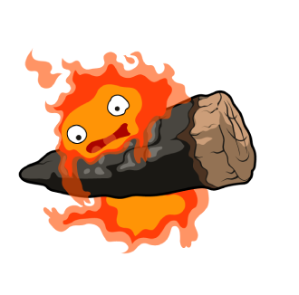
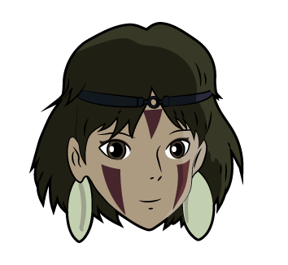
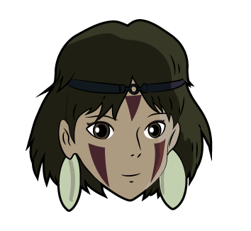
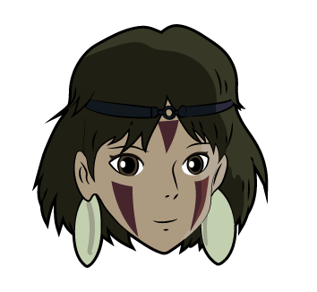

Historia de Studio Ghibli
Studio Ghibli es un estudio de animación japonés que fue creado por Hayao Miyazaki e Isao Takahata (cabe destacar que Takahata creó "Heidi" y "Marco"), ellos trabajaban en otra empresa, la editorial Tokuma Shoten y en el año 1984 publicaron 'Nausicaä del Valle del Viento', que se convertiría en la primera película de los estudios Ghibli, fundados un año después (1985). El nombre (Ghibli) nace de un modelo de avión italiano usado durante la II Guerra Mundial y a su vez, era el término italiano empleado para referirse al viento arenoso y seco que soplaba en ese desierto, Miyazaki y Takahata lo eligieron como metáfora de los nuevos vientos que soplaban en la industria de la animación.

 

